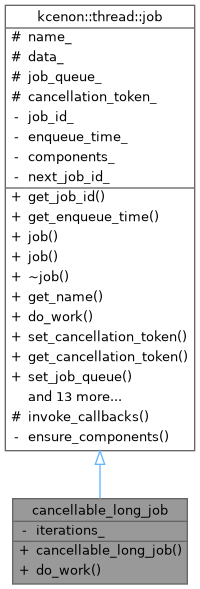
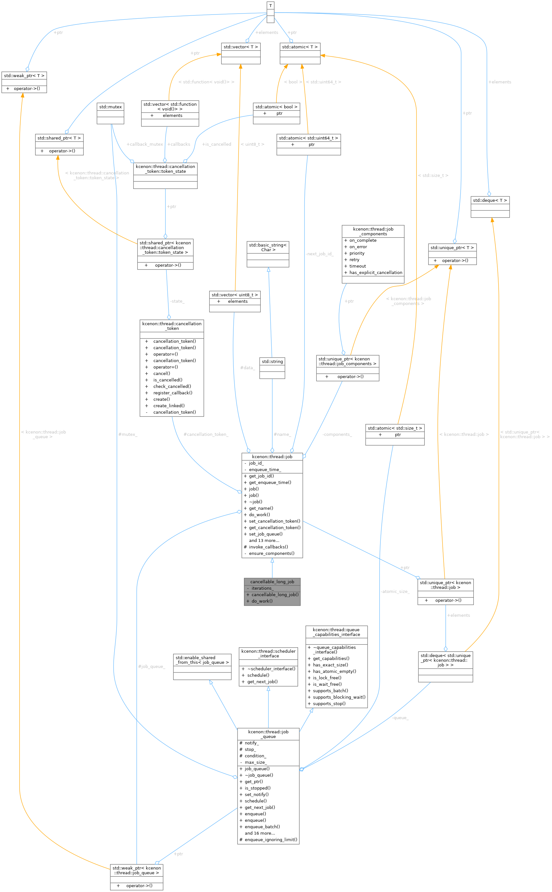
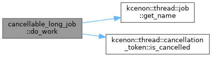

A job that performs a long-running task with periodic cancellation checks. More...


Public Member Functions | |
| cancellable_long_job (const std::string &name, int iterations=100) | |
| kcenon::common::VoidResult | do_work () override |
| The core task execution method to be overridden by derived classes. | |
 Public Member Functions inherited from kcenon::thread::job Public Member Functions inherited from kcenon::thread::job | |
| auto | get_job_id () const -> std::uint64_t |
| Gets the unique ID of this job. | |
| auto | get_enqueue_time () const -> std::chrono::steady_clock::time_point |
| Gets the time when this job was created (enqueued). | |
| job (const std::string &name="job") | |
Constructs a new job with an optional human-readable name. | |
| job (const std::vector< uint8_t > &data, const std::string &name="data_job") | |
Constructs a new job with associated raw byte data and a name. | |
| virtual | ~job (void) |
Virtual destructor for the job class to allow proper cleanup in derived classes. | |
| auto | get_name (void) const -> std::string |
| Retrieves the name of this job. | |
| virtual auto | set_cancellation_token (const cancellation_token &token) -> void |
| Sets a cancellation token that can be used to cancel the job. | |
| virtual auto | get_cancellation_token () const -> cancellation_token |
| Gets the cancellation token associated with this job. | |
| virtual auto | set_job_queue (const std::shared_ptr< job_queue > &job_queue) -> void |
Associates this job with a specific job_queue. | |
| virtual auto | get_job_queue (void) const -> std::shared_ptr< job_queue > |
Retrieves the job_queue associated with this job, if any. | |
| virtual auto | to_string (void) const -> std::string |
| Provides a string representation of the job for logging or debugging. | |
| auto | with_on_complete (std::function< void(common::VoidResult)> callback) -> job & |
| Attaches a completion callback to this job. | |
| auto | with_on_error (std::function< void(const common::error_info &)> callback) -> job & |
| Attaches an error callback to this job. | |
| auto | with_priority (job_priority priority) -> job & |
| Sets the priority level for this job. | |
| auto | with_cancellation (const cancellation_token &token) -> job & |
| Attaches a cancellation token to this job via composition. | |
| auto | with_retry (const retry_policy &policy) -> job & |
| Attaches a retry policy to this job. | |
| auto | with_timeout (std::chrono::milliseconds timeout) -> job & |
| Sets a timeout for job execution. | |
| auto | get_priority () const -> job_priority |
| Gets the priority level of this job. | |
| auto | get_retry_policy () const -> std::optional< retry_policy > |
| Gets the retry policy of this job. | |
| auto | get_timeout () const -> std::optional< std::chrono::milliseconds > |
| Gets the timeout duration for this job. | |
| auto | has_explicit_cancellation () const -> bool |
| Checks if this job has an explicit cancellation set via composition. | |
| auto | has_components () const -> bool |
| Checks if this job has any composed components. | |
Private Attributes | |
| int | iterations_ |
Additional Inherited Members | |
| Protected Member Functions inherited from kcenon::thread::job | |
| auto | invoke_callbacks (const common::VoidResult &result) -> void |
| Invokes the completion callbacks if they are set. | |
| Protected Attributes inherited from kcenon::thread::job | |
| std::string | name_ |
| The descriptive name of the job, used primarily for identification and logging. | |
| std::vector< uint8_t > | data_ |
| An optional container of raw byte data that may be used by the job. | |
| std::weak_ptr< job_queue > | job_queue_ |
A weak reference to the job_queue that currently manages this job. | |
| cancellation_token | cancellation_token_ |
| The cancellation token associated with this job. | |
Detailed Description
A job that performs a long-running task with periodic cancellation checks.
This demonstrates the recommended pattern for implementing cancellable jobs:
- Check cancellation token periodically during execution
- Return operation_canceled error when cancelled
- Perform cleanup before returning
- Examples
- job_cancellation_example.cpp.
Definition at line 42 of file job_cancellation_example.cpp.
Constructor & Destructor Documentation
◆ cancellable_long_job()
|
inline |
- Examples
- job_cancellation_example.cpp.
Definition at line 45 of file job_cancellation_example.cpp.
Member Function Documentation
◆ do_work()
|
inlineoverridevirtual |
The core task execution method to be overridden by derived classes.
Default implementation of work execution (must be overridden).
- Returns
- A
common::VoidResultindicating success or error:- A success result (constructed with common::ok()) if no error occurred.
- An error result (constructed with common::error_info{code, message}) on failure.
Default Behavior
The base class implementation simply returns a success result. Override this method in a derived class to perform meaningful work.
Concurrency
- Typically invoked by worker threads in a
job_queue. - Ensure that any shared data or resources accessed here are protected with appropriate synchronization mechanisms (mutexes, locks, etc.) if needed.
- This method should check the cancellation token if one is set and return an error with code operation_canceled if the token is cancelled.
Implementation details:
- Base implementation always returns "not implemented" error
- Forces derived classes to provide actual work implementation
- Maintains compatibility with result_void error handling
- Should never be called in production (indicates missing override)
Design Pattern:
- Template method pattern: defines interface, requires implementation
- Pure virtual in spirit (returns error instead of being pure virtual)
- Enables compilation while encouraging proper inheritance
Derived Class Requirements:
- Must override this method to provide actual work logic
- Should return common::ok() on success
- Should return common::error_info{...} on failure with descriptive message
- Returns
- Error indicating method needs to be implemented in derived class
Reimplemented from kcenon::thread::job.
- Examples
- job_cancellation_example.cpp.
Definition at line 50 of file job_cancellation_example.cpp.
References kcenon::thread::job::cancellation_token_, kcenon::thread::job::get_name(), kcenon::thread::cancellation_token::is_cancelled(), and iterations_.

Member Data Documentation
◆ iterations_
|
private |
- Examples
- job_cancellation_example.cpp.
Definition at line 85 of file job_cancellation_example.cpp.
Referenced by do_work().
The documentation for this class was generated from the following file:
- examples/job_cancellation_example/job_cancellation_example.cpp